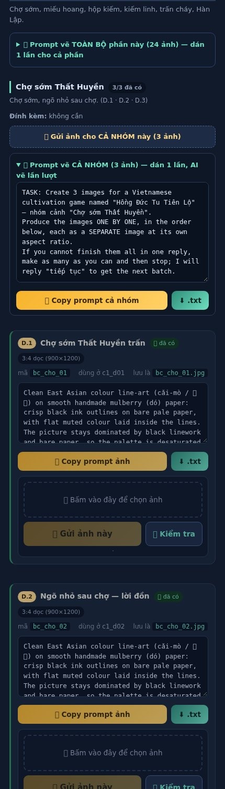
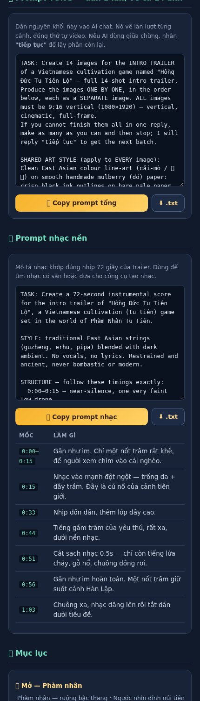

Báo cáo cho anh · 17/11/2026 · nhánh main
Bốn khối câu lệnh quyết định cách vẽ. Em đổi cả bốn:
| Khối | Trước (hướng cũ) | Nay |
|---|---|---|
STYLE_GOCmực đen |
“Painterly cinematic… soft blended edges, volumetric shading, atmospheric depth” | “Clean East Asian ink line-art (baimiao / 白描)… every shape closed by a clear continuous outline, filled with flat even ink, generous empty negative space (liubai)” |
MAU_GOCđiểm màu |
“colour-ink painting… soft blended edges, volumetric shading” | “colour line-art… crisp black ink outlines, flat muted colour laid inside the lines… colour applied flat, never as a soft gradient” |
NET_LIENnét vẽ |
“soft blended edges and graduated tone instead of hard black contours… no bold black outline” | “one continuous unbroken brush stroke… Fill each shape with ONE solid, opaque, evenly toned ink… no mottled or patchy texture, no blotches, no bright pinholes or speckles inside the ink” |
NET_NGUOIngười |
“modelled cheekbones and jaw, clothing painted as large smooth folds” | “correct, realistic human anatomy… outline the face, the hands and the garments with continuous unbroken lines” |
Hai câu quan trọng nhất, vì chúng nhắm thẳng vào bệnh anh thấy:
Thước cũ tìm răng cưa nên không bắt được bệnh thật. Thước mới đo hai thứ anh chỉ ra:
| Đại lượng | Đo gì | Ngưỡng |
|---|---|---|
| LOANG | tỉ lệ điểm còn sáng nằm bên trong thân mực. Mực tô đặc cho 0.00; mực loang lỗ cho 0.15–0.48 | trên 0.15 là loang lỗ |
| ĐỐM | tỉ lệ điểm sáng nằm trong các lỗ nhỏ khoét giữa thân mực. Lỗ lớn là mảng giấy trắng trong nét bao — hợp lệ với line-art, không tính | trên 0.03 là có đốm |
| NÉT | độ nhất quán hướng nét dọc đường biên. Nét kéo một hơi thì hướng đều; nét chắp vụn thì hướng đảo | chỉ để soi ảnh bất thường |
python3 tools/do_net_anh.py --tu-kiem
Trung vị 0.272 so với ngưỡng 0.15 — gần gấp đôi. Đây là bệnh toàn bộ, không phải vài ảnh cá biệt.
Ảnh tệ nhất là chân dung: nv_han_lap 0.477, nv_chinh_mau 0.435.
Ảnh tốt nhất bc_khe_nui_chon 0.087 — vẫn chưa sạch hẳn.
7 ảnh giao diện (nền, khung bảng, viền đại diện, nút, con dấu, đường kẻ) là cái khung để đặt chữ.
Chúng dùng khối STYLE_UI riêng, vẫn line-art nhưng tô phẳng tuyệt đối để chữ trong game đọc được.
Đây là chỗ duy nhất em không áp cùng một câu lệnh.
bc_cho_01.jpg. Em phát hiện ngay, khôi phục từ git,
và đối chiếu md5 — ảnh đã về đúng bản gốc. Em cũng sửa bộ test để nó không bao giờ ghi vào
key ảnh thật nữa.
Một việc: mở Xưởng ảnh, copy prompt, vẽ lại. Prompt đã là bản mới, có câu chống loang lỗ.
Vẽ xong một ảnh là gửi em đo trước. Nếu LOANG còn trên 0.15 thì em phải chỉnh câu lệnh tiếp — chưa nên vẽ cả 70 ảnh.

